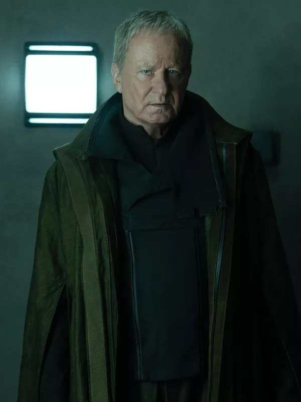

Heroes
Cassian Andor
Cassian Andor is a charismatic spy and soldier with a shadowed past, driven by a deep,
personal resolve to resist the Empire.
Cold-minded, determined, and willing to sacrifice everything for freedom,
he’s not a hero by destiny — but a man shaped by the darkness of the galaxy.

Luthen Rael
A brilliant tactician hiding behind charm and secrecy, Luthen is the quiet architect of rebellion.
Uncompromising and enigmatic, he plays a long game,
igniting sparks of resistance from the shadows — no matter the cost.
Maarva Andor
A fearless voice from the heart of Ferrix, Maarva is guided
by fierce conviction and unshakable principles.
Wise, defiant, and deeply rooted in her people’s struggle, she proves that
rebellion can begin with a whisper — and rise into a roar.
Mon Mothma
A senator in a cage of luxury and lies, Mon Mothma wages a quiet war within the halls of power.
Graceful yet unyielding, she risks everything to light a rebellion from within the very
heart of the Empire.
Syril Karn
Driven by a rigid sense of order and personal ambition,
Syril Karn seeks meaning in a galaxy slipping through his fingers.
Precise, obsessive, and quietly volatile — he's not just enforcing the rules,
he's trying to define himself through them.

Dedra Meero
Cold, calculating, and relentlessly methodical, Dedra Meero turns
the Imperial system into a weapon of precision.
She doesn’t just pursue threats — she dissects them, proving that true power lies in control,
discipline, and an unshakable will.
Bix Caleen
Resourceful, resilient, and fiercely loyal, Bix Caleen stands defiant in a world that demands silence.
Caught between survival and resistance, she carries the weight
of trust — and the scars it leaves behind.